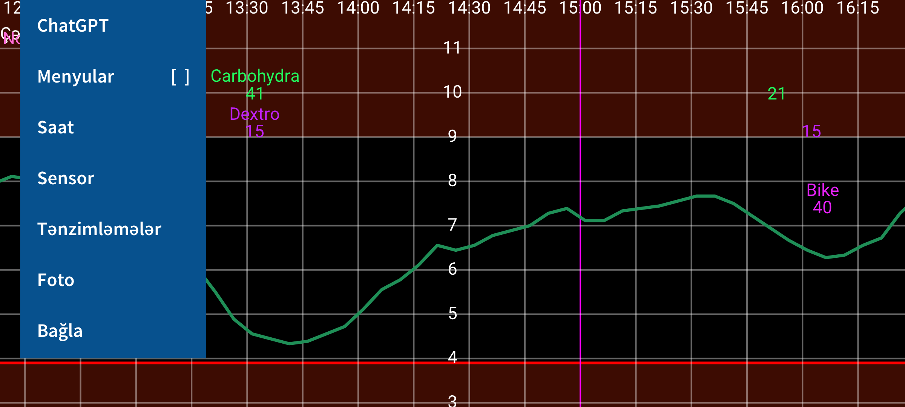
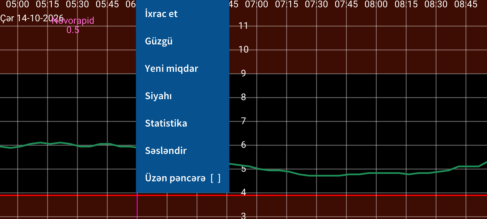
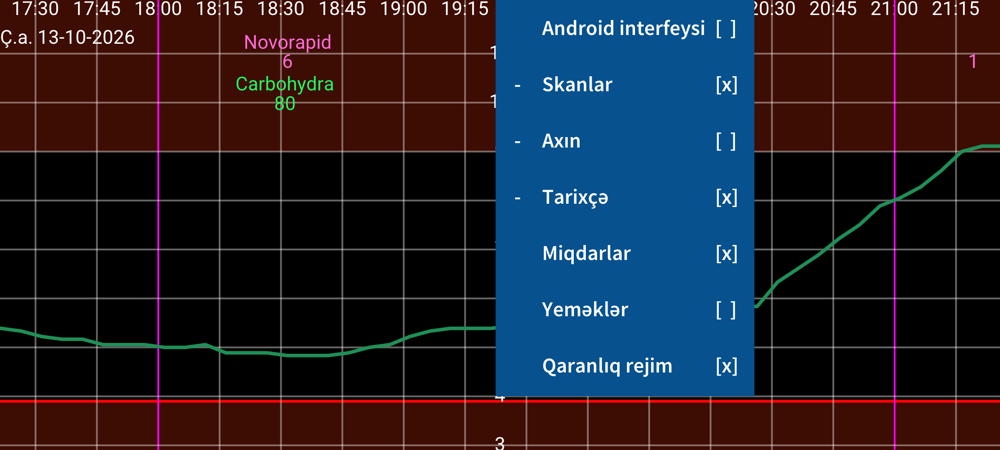
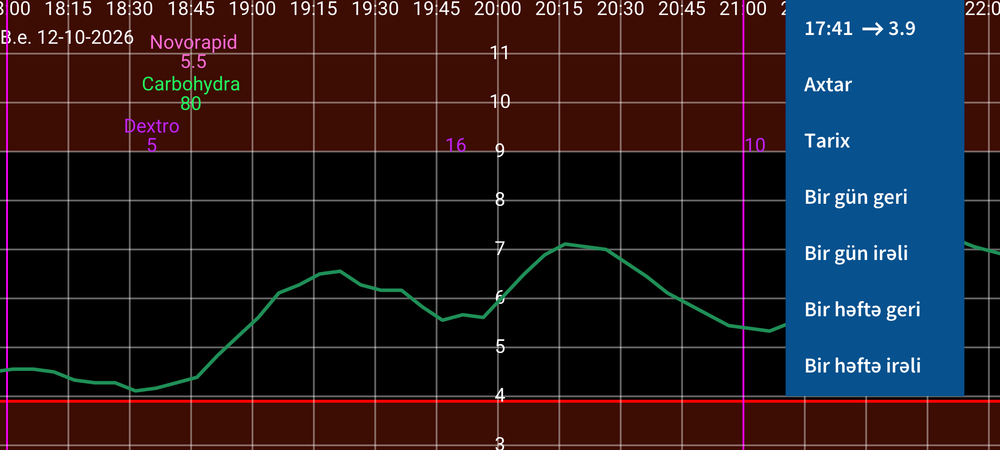

Juggluco diabeti olan insanlara qanda qlükoza səviyyəsini izləməkdə və idarə etməkdə kömək edən tətbiqdir. NFC vasitəsilə FreeStyle Libre 0 və Libre 2 sensorlarını skan edə, Bluetooth vasitəsilə isə FreeStyle Libre 2, 2+, 3 və 3+, Sibionics GS1Sb və GS3, Dexcom G7/ONE+, Accu-Chek SmartGuide, CareSens Air və Linx/Lumiflex/Aidex X sensorlarından qlükoza göstəriciləri ala bilər.
Tətbiqi ilk dəfə açdıqda FreeStyle Libre 2 sensorunu smartfonunuzun NFC oxuyucusuna yaxınlaşdıraraq skan edə bilərsiniz. Bundan sonra Juggluco sensorla Bluetooth bağlantısı qurmağa və əlavə skan tələb etmədən hər dəqiqə qlükoza göstəricisi almağa çalışacaq.
Abbott-un Libre 3 tətbiqində aktivləşdirilmiş FreeStyle Libre 3 və ya 3+ sensorunu Juggluco-ya keçirmək üçün sensoru aktivləşdirərkən istifadə etdiyiniz hesab məlumatlarını Tənzimləmələr → Məlumat mübadiləsi → LibreView bölməsində daxil edin. Hesab ID-sini al düyməsinə basın və sensoru skan etməzdən əvvəl hesab ID-sinin alınmasını gözləyin. FreeStyle Libre 3 oxuyucusunda və ya ABŞ-da həm Libre 2, həm də Libre 3 üçün nəzərdə tutulmuş Libre tətbiqində başladılmış Libre 3 sensorunu bu yolla keçirmək mümkün deyil. Juggluco sadalanan bütün sensorları aktivləşdirə bilər; Accu-Chek SmartGuide isə istisna ola bilər.
Sibionics GS1Sb, Dexcom G7/ONE+, Accu-Chek SmartGuide, CareSens Air və Linx/Lumiflex/Aidex X sensorlarına qoşulmaq üçün onların Data Matrix kodunu sol menyudakı Foto seçimi ilə skan edin. Dexcom G7/ONE+ sensorları Bluetooth vasitəsilə cütləşdirilir. Əksər telefonlarda cütləşdirmə sorğusunu tez təsdiqləməlisiniz; geciksəniz, növbəti cəhd üçün təxminən 5 dəqiqə gözləmək lazım gələcək. Bu müddətdə ekranı açıq saxlayın. Samsung Galaxy Watch 4 və 7 saatlarında cütləşdirməni təsdiqləmək tələb olunmur.
İstifadə müddəti bitmiş Dexcom G7/ONE+ sensorları qlükoza ölçməsini dayandırdıqdan xeyli sonra da Bluetooth vasitəsilə görünə bilər. Juggluco-nun yanlış sensora qoşulmağa çalışmaması üçün köhnə sensorları Bluetooth-un əhatə dairəsindən kənarda saxlayın (məsələn, təxminən 15 metr uzaqda və ya Faradey qəfəsində). Köhnə və yeni sensorların PIN kodu eyni olduqda bu xüsusilə vacibdir. Sensora əvvəllər qoşulan tətbiq və qurğuları söndürün, tətbiqləri məcburi dayandırın və ya silin. Accu-Chek SmartGuide sensorunu cütləşdirərkən PIN daxil edilməlidir.
Sibionics GS3 sensorunu Juggluco ilə başlatmaq üçün qablaşdırmadakı Data Matrix kodunu və ya sensorun özünü NFC vasitəsilə skan edin. Daha sonra ID daxil etməli olduğunuz ekran açılır. Sensor Sibionics GS3 tətbiqində əvvəllər istifadə edilibsə və ya gələcəkdə həmin tətbiqdən istifadə etmək istəyirsinizsə, oradakı e-poçt ünvanınızı və şifrənizi daxil edərək serverdən hesab ID-sini alın. Yeni sensoru yalnız Juggluco ilə istifadə edəcəksinizsə, istənilən nömrəni daxil edə bilərsiniz.
Sensorlara qoşulma barədə əlavə məlumat: www.juggluco.nl/Juggluco/sensors.
Tətbiqdə dörd menyu var. Ekranın boş sahəsinə toxunaraq menyu aça bilərsiniz. Ekranın sol dörddəbirinə toxunduqda birinci (sol) menyu, ortanın sol yarısına toxunduqda ikinci, ortanın sağ yarısına toxunduqda üçüncü, sağ dörddəbirinə toxunduqda isə dördüncü menyu açılır.
15:10 ↗ 93
Axtar
Tarix
Bir gün geri
Bir gün irəli
Bir həftə geri
Bir həftə irəli
Ekranda barmağınızı sola və ya sağa sürüşdürərək qlükoza qrafikini hərəkət etdirə bilərsiniz. Bunun üçün sağdakı hərəkət menyusundan da istifadə etmək olar. Tarix müəyyən tarixi seçir; Axtar qlükoza göstəricilərini və daxil etdiyiniz ədədi qeydləri tapır. Sağ menyunun ilk sətri cari vaxtı göstərir; ona toxunmaq qrafikin ən sağ hissəsinə, yəni indiki vaxta keçir.
Tənzimləmələr bölməsində qlükoza oxunun Əl ilə miqyaslandırılması aktivdirsə, ekranın yuxarı hissəsində barmağınızı yuxarı-aşağı hərəkət etdirməklə qrafikin maksimumunu, aşağı hissəsində isə minimumunu dəyişə bilərsiniz. Vaxt oxunun əl ilə miqyaslandırılması aktivdirsə, iki barmaq arasındakı məsafəni dəyişərək ekranda göstərilən vaxt intervalını artırıb-azalda bilərsiniz.
Android interfeysi [ ]
Skanlar [x]
Axın [x]
Tarixçə [x]
Miqdarlar [x]
Yeməklər [ ]
Qaranlıq rejim [x]
Ortanın sağındakı menyuda görüntü seçimləri var. Android interfeysi seçimi Android idarəetmə elementlərinin və status sətrinin görünməsini idarə edir. Skanlar sətrində [x] işarəsinin olması skan nəticələrinin qrafikdə göstərildiyini bildirir. Skan Libre 0 və ya Libre 2 sensorunu NFC ilə oxuduqda alınan həmin andakı qlükoza göstəricisidir. Skan zamanı sensorun son 8 saatlıq, 15 dəqiqə intervalla saxladığı Tarixçə göstəriciləri də telefona ötürülür. Onların göstərilməsini Tarixçə seçimi idarə edir. Libre 3 sensorlarında Tarixçə göstəriciləri Bluetooth vasitəsilə hər 5 dəqiqədən bir ötürülür. Axın isə FreeStyle Libre 2 və 3 sensorlarının Bluetooth vasitəsilə Juggluco-ya hər dəqiqə göndərdiyi qlükoza göstəriciləridir.
İnsulin, karbohidrat qəbulu və fiziki fəaliyyətinizi qeyd etmək üçün istədiyiniz adla (etiketlə) müxtəlif miqdarlar daxil edə bilərsiniz. Bu qeydlər göstərilən tarix və vaxtda qlükoza qrafikində sabit hündürlükdə görünür. Qrafikdəki nöqtəyə və ya daxil edilmiş miqdara toxunmaq həmin qeyd barədə məlumat göstərir; uzun basmaqla miqdarı redaktə edə bilərsiniz. Düzəliş etmək üçün ortanın solundakı menyudan Siyahı seçib müvafiq sətrə toxunmaq da olar. Miqdarlar seçimi bu qeydlərin qrafikdə görünməsini idarə edir. Etiketləri Tənzimləmələr bölməsində müəyyənləşdirə bilərsiniz; etiketlər müvafiq miqdarların üzərində görünür.
İxrac et
Güzgü
Yeni miqdar
Siyahı
Statistika
Səsləndir
Üzən pəncərə [ ]
Yeni qeyd əlavə etmək üçün Yeni miqdar seçin. İxrac et məlumatları tabulyasiya işarəsi ilə ayrılmış sütunlardan ibarət .tsv faylına yazır. Güzgü eyni məlumatların başqa qurğuda işləyən Juggluco-da göstərilməsi üçün IP/TCP vasitəsilə ötürülməsini təmin edir. Siyahı daxil edilmiş miqdarları göstərir.
Bluetooth vasitəsilə kifayət qədər qlükoza göstəricisi alınıbsa, Statistika bölməsində qlükoza intervalında keçirilən vaxtın faizini, qlükoza idarəetmə göstəricisini (GMI – HbA1c-ni qiymətləndirməyə kömək edən göstərici), qlükoza dəyişkənliyini və günün hər dəqiqəsi üzrə 0, 5, 25, 50, 75, 95 və 100 faiz qiymətlərin aşağıda qaldığı səviyyələri əks etdirən ümumiləşdirilmiş qrafiki görə bilərsiniz.
Səsləndir bölməsində gələn qlükoza göstəricilərinin, qrafikdə toxunulan elementlərin və mesajların səsləndirilməsini aktivləşdirə bilərsiniz. Üzən pəncərə digər tətbiqlərin üzərində qlükoza göstəricisini göstərir. Onun rəngini və ölçüsünü Tənzimləmələr bölməsində dəyişə bilərsiniz.
ChatGPT
Menyular [ ]
Saat
Sensor
Tənzimləmələr
Foto
Bağla
Sol menyudakı Tənzimləmələr bölməsində qlükoza vahidini (mmol/L və ya mg/dL), miqdar etiketlərini, aşağı/yüksək qlükoza siqnallarını, dərman qəbulu xatırlatmalarını və qrafikin diapazonlarını təyin edə bilərsiniz. Android interfeysi Android idarəetmə elementlərinin və status sətrinin görünməsini idarə edir. Saat bölməsində məlumatların müxtəlif ağıllı saatlara göndərilməsini quraşdıra bilərsiniz. Sensor bölməsi sensorla bağlantının vəziyyətini göstərir. Menyular seçimi dörd menyunu TalkBack-in səsləndirə bildiyi bir quruluşda eyni anda göstərir. Bağla Juggluco-dan çıxır.